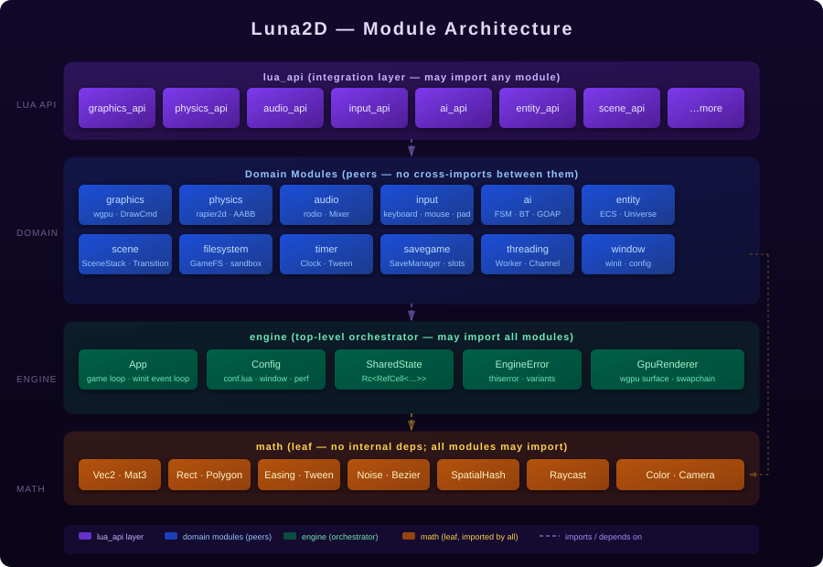

A desktop-only 2D game engine written in Rust that runs your Lua scripts. You write the game logic — the engine handles the rest.
Everything needed to build a 2D game on Windows, Linux, or macOS.
Write all game logic in Lua via the unified luna.* namespace. No external engine prefixes — one clean API surface.
The engine runtime is written in Rust. GPU submission, multi-threading, and frame orchestration stay fast and safe.
Hardware-accelerated via wgpu (Vulkan / DX12 / Metal). Runs well on integrated GPUs.
rodio-backed mixer with bus routing. Load WAV, MP3, OGG, FLAC — playback and volume control from Lua.
AABB rigid-body simulation powered by rapier2d. Dynamic and static bodies, impulse resolution, sensors.
Tileset atlases, tile culling, A★ and HPA★ grid navigation, and flow fields — all scriptable from Lua.
FSM, Behaviour Trees, GOAP planning, Q-learning, influence maps, steering behaviours, and squad management.
Run background Lua workers on separate threads. Communicate via type-safe Channel objects — no shared VM state.
Named save slots, autosave, schema versioning, and full Lua-table round-trip serialisation.
Entity–Component–System with bitmap tags, blueprints, layer-based organisation, and fast system dispatch.
SceneStack with push/pop semantics and animated transitions: fade, slide left/right/up/down.
First-party extension with IntelliSense, MCP server, AI-oriented tooling, and inline API documentation.
Install Rust, clone the repo, and run your first game in minutes.
# Clone and build
git clone https://github.com/RandomBladeDude/luna_2d
cd luna_2d
cargo build
# Show splash screen (no game loaded)
cargo run
# Run a bundled example
cargo run -- examples/hello_world
cargo run -- examples/physics_demo
cargo run -- examples/spritesA minimal main.lua game script:
-- main.lua — Luna2D hello world
local x, y = 100, 100
local speed = 180
function luna.load()
luna.window.setTitle("Hello, Luna2D!")
end
function luna.update(dt)
if luna.keyboard.isDown("right") then x = x + speed * dt end
if luna.keyboard.isDown("left") then x = x - speed * dt end
if luna.keyboard.isDown("up") then y = y - speed * dt end
if luna.keyboard.isDown("down") then y = y + speed * dt end
end
function luna.draw()
-- Sky-blue background
luna.graphics.setBackgroundColor(0.06, 0.06, 0.12)
-- Draw the player square
luna.graphics.setColor(0.48, 0.24, 0.93)
luna.graphics.rectangle("fill", x, y, 48, 48)
-- HUD text
luna.graphics.setColor(1, 1, 1)
luna.graphics.print("Use arrow keys to move", 10, 10)
end
function luna.keypressed(key)
if key == "escape" then
luna.event.quit()
end
endLuna2D is layered: math (leaf) ← domain modules ← engine ← lua_api. Domain modules are peers — no cross-imports between them.

How Luna2D initialises from a CLI argument to your first luna.update() call.
Allowed import directions. Arrows point from importer to dependency.
Define these global functions in main.lua. All are optional — an empty script is valid.
| Function | When called |
|---|---|
| luna.load() | Once, after the script is loaded and the window is ready. |
| luna.update(dt) | Every frame. dt is elapsed seconds since last frame. |
| luna.draw() | Every frame for rendering. Push draw commands here — never in update. |
| luna.keypressed(key) | A keyboard key was pressed. key is a lowercase string. |
| luna.keyreleased(key) | A keyboard key was released. |
| luna.textinput(text) | A text character was typed (use this for text fields). |
| luna.mousepressed(x, y, btn) | Mouse button pressed. btn: 1=left, 2=right, 3=middle. |
| luna.mousereleased(x, y, btn) | Mouse button released. |
| luna.wheelmoved(x, y) | Mouse wheel scrolled. |
| luna.gamepadpressed(id, btn) | Gamepad button pressed. |
| luna.gamepadreleased(id, btn) | Gamepad button released. |
| luna.gamepadaxis(id, axis, val) | Gamepad analogue axis moved. |
| luna.focus(has_focus) | Window gained or lost focus. |
| luna.resize(w, h) | Window was resized. |
The constraints that shape every engine decision.
Windows, Linux, and macOS. Mobile and WASM are explicitly out of scope — this keeps the API surface focused.
No 3D scene graph or perspective pipeline. Raycasting and isometric projection are fine — they use 2D draw calls.
Luna2D is a runtime binary. The official VS Code extension is a separate companion product for tooling.
Batching, GPU submission, and concurrency are engine responsibilities. Your Lua code shouldn't need to care.
Documentation and AI usability are product requirements. The CAG layer makes every module copilot-friendly.
Luna2D is released under the MIT License. No platform SDK dependencies, no monetisation features baked in.